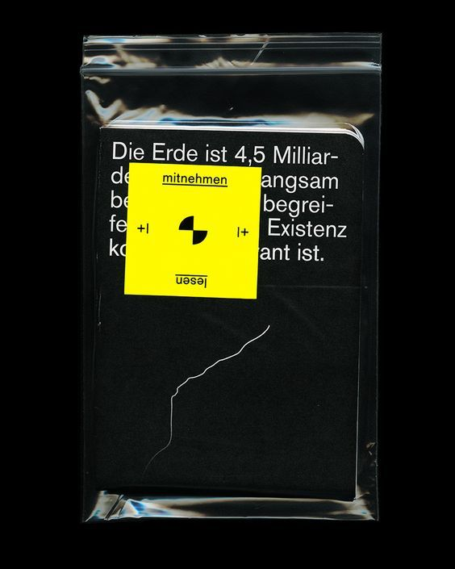

|  |
Diogo PaixãoMotion Designer and Art Director \ Multimedia Engineer \ CGI GeneralistMaking projects withs a skewed axis towards a production driven workflow
|
BA in Sociology @ Faculty of Arts and Humanities of the University of Porto - FLUP
MA in Multimedia Engineering @ Faculty of Engineering of the University of Porto - FEUP
Designer / Delta 0 - Animation Short
Designer / Last of Mankind - Conceptual Title Design
Designer / The Death of Stalin - Conceptual Title Design
Designer | Creative Director / Utopia TV Series - Main Title Design and Animation
Designer | Art Director / Plasticity - Experimental Fully CG Animated Short Film
Designer | Art Director / Spectra - Fully CG Animated Short Film
Including the forementiond projects I'll also list my experience in the technical realm compiled into 3 different categories.
Very confortable using the Creative Cloud Suite, primarly Adobe Photoshop, After Effects and Premiere.
Usually working through a node-based workflow and related software. Those include Blackmagic's Fusion and Blackmagic's Resolve.
Experience designing, animating and optimizing pipelines reated to Maxon's Cinema 4D, and SideFX's Houdini.
Tipically render using GPU-based render engines, such as Maxon's Redshift or Otoy's Octane Render. Also have experience using Autodesk's Arnold Renderer.
Check the Contact page for in-depth details about my progress and overall carreer. As well as contact info
| Phone No. | 969696969 |
| digosdffd@fdsjffjofg.com |
|